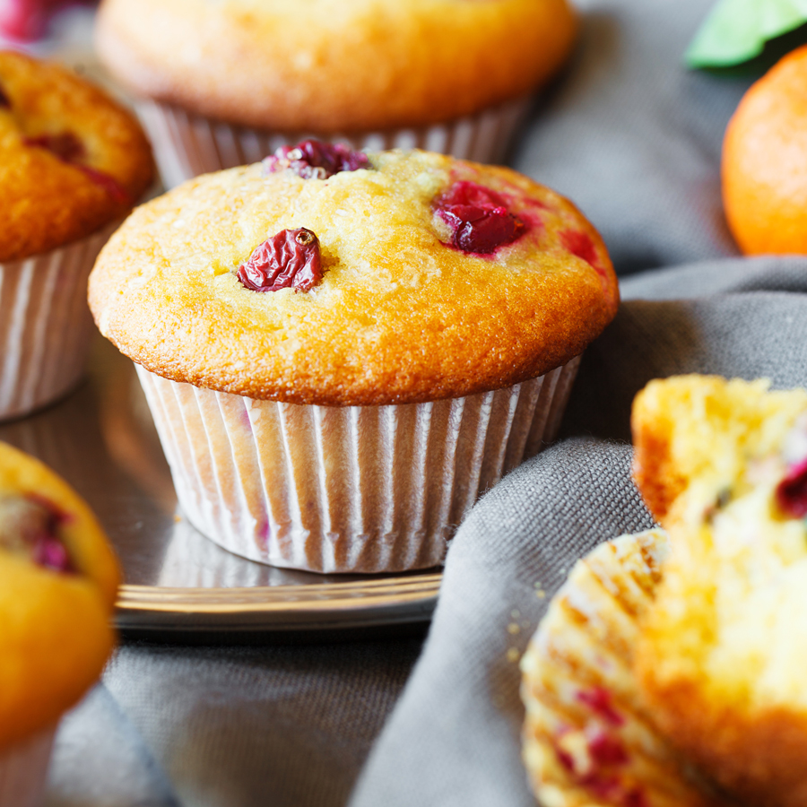

Cute Tangerine Muffins
When my dad brought home a bag of cute little tangerines, I needed a way to use them up quickly, so I composed this yummy, crumbly muffin recipe filled with loads of tangerine sweetness and just enough cranberry tartness!

Ingredients
- 1 cup dried cranberries
- ¼ cup fresh tangerine juice
- 2 cups unbleached all-purpose flour
- 2 teaspoons baking powder
- 2 teaspoons baking powder
- ½ cup unsalted butter, softened
- 2 tablespoons tangerine zest
- 1 cup white sugar (Optional)
- 2 large eggs
- ½ cup milk
- 1 teaspoon white sugar, divided (Optional)
How to make Tangerine Muffins Step-By-Step
- Preheat oven to 375 degrees F (190 degrees C). Grease 12 muffin cups or line with paper liners.
- Simmer dried cranberries and tangerine juice in a small saucepan over medium heat; remove pan from heat and set aside to cool.
- Whisk flour, baking powder, and salt into a bowl. Mix butter, tangerine zest, and 1 cup sugar in a separate large bowl, using an electric mixer, until mixture is light and fluffy, about 2 minutes. Scrape down sides of bowl and beat eggs into butter mixture, one at a time, until thoroughly combined.
- Gently fold flour mixture into the butter mixture, alternating with milk in two additions, until batter is just mixed. Fold cranberries and juice into batter. Pour batter into prepared muffin cups and top with 1 teaspoon sugar.
- Bake in the preheated oven until muffins are golden brown, 20 to 25 minutes. Cool in pan on a rack.